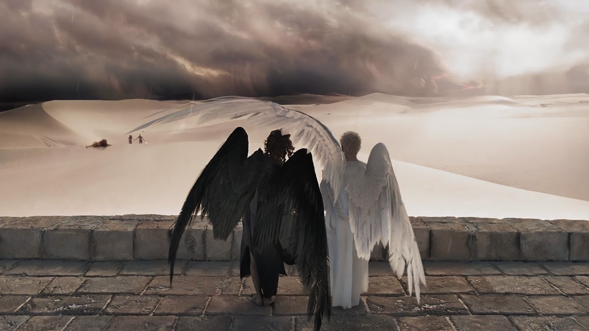

| Мир телесериала "Благие знамения" | ||
|
Википедия --> |
 | |
|
"Благие знамения" ("Good omens") — британско-американский фэнтези-сериал, снятый по мотивам культового романа Нила Геймана и Терри Пратчетта. На сегодняшний день вышло два сезона по 6 серий каждый, с хронометражем около 50 минут на эпизод. Премьера первого сезона состоялась в 2019 году, второй сезон вышел в 2023. Сериал получил признание критиков, включая премию «Хьюго» за лучшую постановку, и известен благодаря блестящему дуэту Майкла Шина и Дэвида Теннанта в ролях ангела Азирафеля и демона Кроули. Визуальный стиль сочетает исторические реконструкции с компьютерной графикой, создавая уникальную атмосферу сатирической фэнтези-комедии. Сюжет Ангел с врождённой любовью к редким книгам и демон, похожий на рок-звезду, уже 6000 лет тайно дружат на Земле. Когда наступает Апокалипсис, они понимают, что земная жизнь им дорога как ни рай, ни ад. Вместо битвы добра и зла два сверхъестественных бюрократа объединяются, чтобы найти Антихриста и мягко уговорить его не уничтожать мир. Проблема только в том, что они его… потеряли. Но за глобальным сюжетом о спасении мира здесь скрывается нечто большее — трогательная, полная юмора и душевности история о взаимоотношениях демона Кроули и ангела Азирафеля, чья, казалось бы, запретная дружба длиной в шесть тысячелетий оказывается сильнее любых пророчеств и войн. Топ-5 причин посмотреть сериал:
|
| Кроули | ||||
| колки на язык | любите разводить растения | пылкий характер | крутой гардероб | |
| эгоист во взглядах | полны харизмы | любите блинчики | не держитесь сторон | обожаете сарказм |
| любитель винила и кассет | следите за модой | есть татуировка | носите темные очки | можете долго скрывать свои чувства |
| любите старые машины | готовы на все ради любимого человека | боретесь за свое мнение и позицию | умеете говорить людям "нет" | очень ревнивы |
| любите черный цвет | хорошо танцуете | талантливы в драмах | пытаетесь быть злым, но в душе довольно порядочны | любите слушать Queen |
| Азирафель | ||||
| любите читать книги | плохо танцуете | мягкий характер | держитесь принципов морали | |
| обожаете фокусы | не можете говорить "нет" | легко меняете мнение | всегда опрятны | любите желтый цвет |
| любите суши | конфликты внутри себя | наивны | любите тихие поездки | ложь только во благо |
| очень гуманны | любите блинчики | не принимаете чувства | переживаете за все | не мешаете дрeгим |
| приветливы и добры ко всем | обожаете слушать классику | знаете много языков | в ссорах всегда ищете компромисс | любите чай и горячий шоколад |